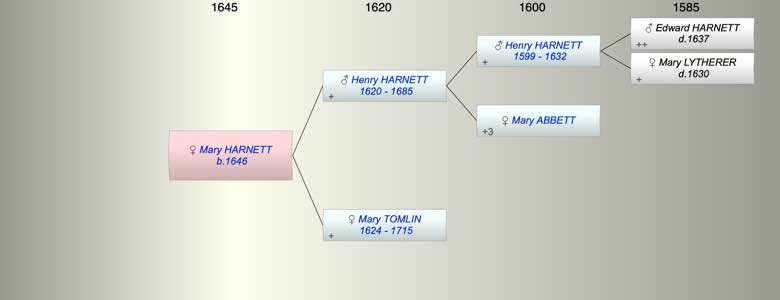

| [Index] |
| Mary HARNETT (1646 - ) |
|  |
| b. 1646 at St Laurence |
| Parents: |
| Henry HARNETT (1620 - 1685) |
| Mary TOMLIN (1624 - 1715) |
| Siblings (4): |
| Edward HARNETT (1643 - ) |
| Ann HARNETT (1649 - ) |
| Thomas HARNETT (1653 - 1678) |
| Peter HARNETT (1658 - 1720) |
| Events in Mary HARNETT (1646 - )'s life | |||||
| Date | Age | Event | Place | Notes | Src |
| 1646 | Mary HARNETT was born | St Laurence | Note 1 | ||
| 09 May 1685 | 39 | Death of father Henry HARNETT (aged 65) | St Lawrence | Note 2 | |
| 03 Jan 1715 | 69 | Death of mother Mary TOMLIN (aged 91) | St Laurence | Note 3 | |
| Note 1: bap St Lawrence 28 Sep 1646 dau of Henry and Mary ex FMP |
| Note 2: ex Cotton at St Lawrence MI in 65th year |
| Note 3: ex Cotton in her 91 st year had 7 sons and 3 daughters ex MI |
| Created on a Mac™ using iFamily for Mac™ on 8 Oct 2023 |